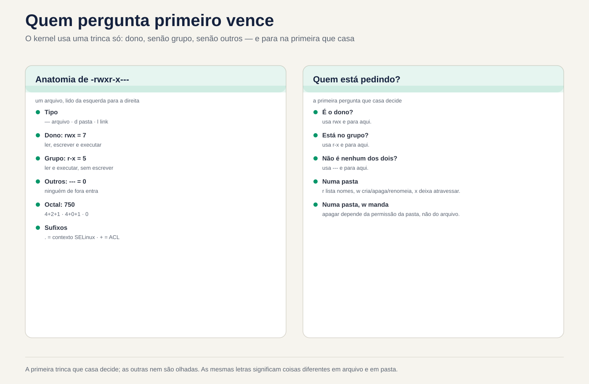
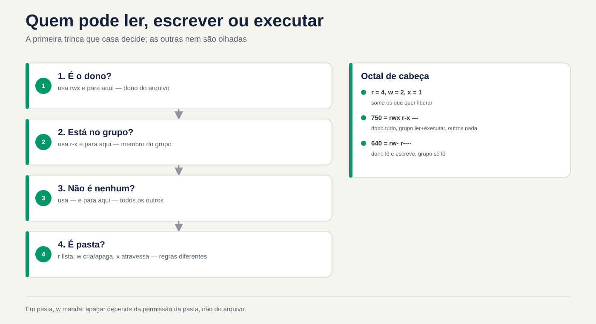

Lezione 2.7 · Permessi e proprietario
Settima lezione del Modulo 2. "Permesso negato" è il messaggio di errore più comune nella vita di un amministratore di sistema, e la risposta più comune è la peggiore: chmod -R 777. Il problema scompare e ne compaiono tre: qualcuno cancella tutto, SSH smette di accettare la chiave e l'audit successivo contrassegna la cartella in rosso. Oggi impari a leggere le nove lettere di un ls -l come fa il kernel e a dare a ciascuno esattamente l'accesso di cui ha bisogno. Utilizzi Ana, Bruno e il gruppo equipe della lezione 2.6, con gli stessi numeri in entrambe le VM, per testare chi legge, chi scrive e chi cancella e perché.
| File | lezione 2.7 |
|---|---|
| Modulo | M2 · Sistema, utenti e permessi, lezione 7 di 8 |
| Quando | Settimana 5 |
| Alla fine puoi | Leggere i permessi di file e cartelle e dire chi può cosa; spiegare cosa significano r, w e x in una cartella; utilizzare chmod in modalità simbolica e ottale, anche in interi alberi senza danneggiare le cartelle; cambiare proprietario e gruppo con chown e chgrp; prevedere e adattare umask; seguire uno script quando viene visualizzato "Autorizzazione negata" |
| Articoli di prova | LE 015.3 (autorizzazioni e proprietario: ls -l, chmod, chown, chgrp, umask) · LPIC-1 104.5 (gestire le autorizzazioni e il proprietario dei file: modalità simbolica e ottale, umask, chown, chgrp) · RHCSA (elencare, definire e modificare i permessi ugo/rwx pattern; diagnosticare e correggere i problemi di autorizzazione dei file) |
| Prerequisiti | lezione 2.6 (Ana, UID 2001; Bruno, UID 2002; gruppo equipe, GID 2000, su entrambe le VM; i gruppi sono validi al login); lezione 2.5 (sudo, il cognome deb); lezione 1.8 (permesso di eseguire uno script) |
| Tempo | Intorno alle 2:30 |
| Istantanee | m2a7-start e m2a7-end in entrambe le VM |
1 · Riscaldamento
Tre domande, appena mi vengono in mente. Scrivi le risposte; la chiave di risposta viene visualizzata alla fine.
- Il file
relatorio.txtsi chiama-r--r--r-- root roote si trova nella cartelladrwxrwxrwx. Indovina: Ana, che non è root, può cancellarlo? - Hai creato
backup.shed è-rw-r--r--. Indovina:./backup.shfunziona? Ebash backup.sh? - Il file
nota.txtè----rw---- ana equipee Ana è nel gruppoequipe. Indovina: Ana riesce a leggere il proprio file?
2 · Perché è importante
Quasi ogni richiesta di autorizzazione rientra in uno dei quattro casi e ognuno ha una risposta sbagliata che sembra funzionare:
| Il cosiddetto | La risposta sbagliata | Cosa provoca |
|---|---|---|
| "Bruno non può modificare il foglio di calcolo di Ana nella cartella del team" | chmod -R 777 /srv/equipe | Qualsiasi account sulla macchina, incluso il server web, legge, modifica ed elimina tutto |
| "Lo script di backup dice che l'autorizzazione è stata negata" | chmod 777 backup.sh | Chiunque può modificare il contenuto di uno script che root esegue ogni notte |
| "Ho caricato il sito web e ora dice 403" | chmod -R 644 /var/www/site | Le cartelle perdono x e nessuno ci entra, nemmeno il web server |
| "SSH ha smesso di accettare la mia chiave" | Genera un'altra chiave | Il problema era una cartella con scritto per il gruppo; o sshd rifiuta la chiave di proposito |
In tutti e quattro i casi, il vero risolutore fa la stessa cosa: chiede chi sta provando, cosa sta cercando di fare e dove, e legge i permessi per l'intero percorso. Questo è ciò che ti alleni oggi.
3 · Modello mentale
Ogni file ha un proprietario, un gruppo e tre autorizzazioni. Il kernel chiede "chi sei?" e ne usa uno solo tre: quello del proprietario, se sei tu il proprietario; altrimenti il gruppo, se sei nel gruppo; tranne quello degli altri. Decide il primo che si sposa e gli altri non si guardano nemmeno.
-rwxr-x---. 1 ana equipe 2048 nov 3 09:12 fechamento.sh
│└┬┘└┬┘└┬┘│ │ │
│ │ │ │ │ │ └─ grupo do arquivo
│ │ │ │ │ └────── dono do arquivo
│ │ │ │ └─ "." = tem contexto SELinux (Rocky); "+" = tem ACL (Aula 8.5)
│ │ │ └─── outros: quem não é o dono nem está no grupo --- = 0
│ │ └────── grupo: quem está no grupo equipe r-x = 5
│ └───────── dono: a ana rwx = 7
└─────────── tipo: - arquivo, d pasta, l link
octal: 750
Quem está pedindo?
é o dono? ── sim ──▶ usa rwx (e para aqui)
│ não
está no grupo? ── sim ──▶ usa r-x (e para aqui)
│ não
usa ---Le stesse lettere significano cose diverse in un fascicolo e in una cartella. Questa tabella risolve la metà delle chiamate:
| Testi | In un file | In una cartella |
|---|---|---|
r (4) | Leggi il contenuto | Elenca i nomi presenti in |
w (2) | Modifica contenuto | Crea, elimina e rinomina ciò che c'è dentro, indipendentemente dal permesso del file |
x (1) | Esegui come programma | Entra nella cartella e sfogliala per trovare qualcosa al suo interno |
Quattro idee guidano la lezione:
| Idea | Cosa intendi | Conseguenza |
|---|---|---|
| Solo un viaggio | Proprietario, se non gruppo, se non altri. I conti non tornano | Un proprietario con meno autorizzazioni di quelle del gruppo ottiene quella del proprietario |
| L'eliminazione è compito della cartella | L'eliminazione di un file modifica la cartella, non il file | Un file r--r--r-- in una cartella con w può essere cancellato |
| Conta tutto il percorso | Per arrivare a /srv/a/b/c.txt è necessario x in /, /srv, /srv/a e /srv/a/b | Un file rw-rw-rw- all'interno di una cartella senza x non è raggiungibile |
| La nascita decide | Ogni nuovo file nasce con il gruppo principale di chi lo ha creato e con il umask di chi lo ha creato | La maggior parte dei problemi relativi alle cartelle condivise riguardano il gruppo sbagliato o umask al momento della creazione |


4 · Concetto a strati
Essenziale
Leggi. ls -l mostra le lettere; stat mostra anche il numero, che è quello che digiterai in chmod.
ls -l /etc/passwd /etc/shadow
ls -ld /tmp /home/rodrigo
stat -c '%A %a %U:%G %n' /etc/passwd /etc/shadow /tmp-rw-r--r--. 1 root root 1532 nov 3 08:10 /etc/passwd
----------. 1 root root 987 nov 3 08:10 /etc/shadow
-rw-r--r-- 644 root:root /etc/passwd
---------- 0 root:root /etc/shadow
drwxrwxrwt 1777 root:root /tmp-d di ls -ld mostra la cartella stessa, anziché ciò che c'è al suo interno. /etc/shadow con 0 non è un errore: nessuno ha i permessi e solo root, che ignora i permessi di lettura e scrittura, può leggere. t alla fine di /tmp e 1 prima di 1777 sono la parte adesiva, oggetto della lezione 2.8. L'esempio è tratto da Rocky-Lab; in debian-lab ls -l viene fornito senza . dopo i permessi e /etc/shadow appare come -rw-r----- root shadow.
Il numero. Ogni tripla diventa una cifra che si somma a r=4, w=2, x=1:
| Testi | Conto | Cifra | Utilizzo tipico |
|---|---|---|---|
rwx | 4+2+1 | 7 | Proprietario della cartella o dello script |
rw- | 4+2 | 6 | Proprietario file comune |
r-x | 4+1 | 5 | Cartella o gruppo di script |
r-- | 4 | 4 | Sola lettura |
--- | 0 | 0 | Niente |
I numeri che digiterai quasi sempre: 644 e 755 (file e cartelle pubblici predefiniti), 640 e 750 (solo il gruppo legge), 600 e 700 (solo il proprietario), 660 e 770 (il gruppo lavora insieme).
Modifica permessi: chmod. Due modi per dire la stessa cosa:
chmod 750 fechamento.sh # ottale: definisce tre terzine contemporaneamente
chmod u=rwx,g=rx,o= fechamento.sh # simbolico: stesso risultato
chmod u+x backup.sh # simbolico relativo: aggiunge x al proprietario, non cambia nient'altro
chmod g-w,o-r planilha.csv # rimuovi w dal gruppo e r dagli altri
chmod a+r leiame.txt # a = tutti, le tre terzine| Parte | Voglio dire |
|---|---|
u, g, o, a | Proprietario (utente), gruppo, altri, tutti |
+, -, = | Aggiungere, togliere, definire esattamente (ciò che non è scritto diventa -) |
r, w, x | I permessi |
Octal sono utili per definire l'intero stato. Il simbolico relativo serve per cambiare una cosa senza saperlo o senza cambiare il resto. Solo il proprietario del file e root possono eseguire chmod su di esso.
Cambia proprietario e gruppo: chown e chgrp.
sudo chown ana planilha.csv # cambiare proprietario
sudo chown ana:equipe planilha.csv # proprietario e gruppo
sudo chown :equipe planilha.csv # semplicemente il gruppo
chgrp equipe planilha.csv # solo il gruppo, senza sudo, se sei il proprietario e fai parte del gruppo
sudo chown -R ana:equipe /srv/projeto # l'intero alberoSolo root cambia il proprietario di un file. Un utente comune può modificare il gruppo di un suo file, ma solo per un gruppo di cui fa parte.
Intermedio
O umask. I programmi che creano file richiedono generalmente 666 per i file e 777 per le cartelle. umask è l'elenco di cosa prendere da questa richiesta:
umask | Nuovo file | Nuova cartella | Da dove viene |
|---|---|---|---|
0022 | 644 rw-r--r-- | 755 rwxr-xr-x | La radice; utenti comuni su Debian |
0002 | 664 rw-rw-r-- | 775 rwxrwxr-x | Utenti abituali di Rocky, che hanno un proprio gruppo personale |
0027 | 640 rw-r----- | 750 rwxr-x--- | Server rinforzati, script che generano dati interni |
0077 | 600 rw------- | 700 rwx------ | Gli script che generano chiavi, password, dump bancari |
umask # 0022, per esempio
umask -S # u=rwx,g=rx,o=rx: ciò che è SINISTRA, in lettere
umask 027 # solo per questa shell e ciò che apreumask non aggiungono mai autorizzazioni. Non nasce un nuovo file con x, qualunque sia umask, perché il programma ha richiesto 666: ecco perché ogni nuovo script necessita di chmod u+x. umask si applica al processo e a tutto ciò che apre; Il valore predefinito per ogni accesso proviene da /etc/login.defs e dai file di inizializzazione della shell, e il tuo ~/.bashrc può modificarlo per te.
Testa come qualcun altro. Invece di chiedere ad Ana di riprovare, chiedi al kernel:
sudo -u ana cat /srv/equipe/planilha.csv
sudo -u ana test -w /srv/equipe/planilha.csv && echo "a Ana pode escrever"
namei -l /srv/equipe/planilha.csvsudo -u ana esegue il comando come Ana, con i suoi gruppi, senza chiederle la password. namei -l mostra proprietario, gruppo e permessi per ogni cartella nel percorso, da / al file. È lo strumento numero uno quando il file sembra corretto e l'accesso fallisce comunque.
Altri strumenti per salvare gli errori:
install -m 640 -o ana -g equipe modelo.csv /srv/equipe/ # copiare con modalità, proprietario e gruppo
install -d -m 770 -o root -g equipe /srv/equipe # crea una cartella con modalità, proprietario e gruppo
cp -p origem destino # modalità di conservazione della copia, proprietario (se root) e date
chmod --reference=modelo.csv novo.csv # copiare i permessi da un altro filecp senza -p crea il nuovo file come tuo, con il tuo umask: ecco perché un file copiato da un altro server "perde" i permessi.
Windows Bridge
| Su Windows | Su Linux | La differenza che fa |
|---|---|---|
| Scheda Sicurezza, elenco di utenti e gruppi | Tre gemelli: proprietario, un gruppo, altri | In Linux standard, un file ha un gruppo. Inoltre, ci sono le ACL (lezione 8.5) |
| I permessi si sommano e Nega vince | Utilizza i primi tre corrispondenti, senza aggiungere | Il proprietario con meno permessi del gruppo ottiene quello del proprietario |
| "Tutti: controllo totale" | 777 | Stesso errore, stesso risultato |
| "Prendersi proprietà" (assumersi proprietà) | sudo chown | In Linux, solo root cambia il proprietario |
| Ereditarietà delle autorizzazioni dalla cartella principale | Non esiste; umask e il gruppo dei creatori decidono | Un nuovo file non eredita i permessi della cartella. Il gruppo può essere ereditato con setgid (lezione 2.8) |
| L'eliminazione è un'autorizzazione per i file | La cancellazione è autorizzata w per la cartella | Un file di sola lettura può essere eliminato da chiunque scriva nella cartella |
Advanced
La radice e x. La radice ignora r e w in qualsiasi file e r e x in qualsiasi cartella. Ma per eseguire un file, anche root ha bisogno che almeno una delle tre triplette abbia x. Ecco perché sudo ./backup.sh fallisce in uno script 644.
I permessi vengono controllati all'apertura. Il kernel controlla i permessi quando il processo apre il file. Un processo che aveva già il file aperto continua a leggere e scrivere dopo un chmod 000. Nella vita reale: ottenere l'autorizzazione da un registro non interrompe il servizio che sta già scrivendo su di esso.
Senza r in una cartella, con x. Una cartella 711 (rwx--x--x) permette ad altri di entrare e aprire un file di cui conoscono già il nome, ma non di elencarlo. Questo è il modo in cui i vecchi server lasciavano ~/public_html accessibile al server web senza esporre l'elenco dei file nella cartella home.
Gli indicatori dopo le lettere. Un . dopo i permessi significa che il file ha un contesto SELinux, quello normale in Rocky. Un + significa che c'è un ACL, permessi extra oltre alle tre triple, che ls -l non mostra; getfacl arquivo viene visualizzato. Se le tre triplette dicono di sì e l'accesso fallisce, la causa è in uno di questi due livelli: lezione 8.5 per ACL, lezione 12.3 per SELinux.
La quarta cifra. stat a volte mostra quattro cifre, come 1777 in /tmp. Il primo sono i permessi speciali: setuid (4), setgid (2) e sticky (1). È la lezione 2.8.
Cosa c'è nel test
- LE 015.3: leggi
ls -l; convertire tra lettere e ottale; cosa fanno ir,wexin una cartella;chmod,chown,chgrp; ilumaske il risultato in nuovi file e cartelle. - LPIC-1 104.5: lo stesso, con modalità simbolica completa (
u+x,g=rx,o-rwx,a+r), conteggichmod -R,chown usuario:grupoeumask. - RHCSA: l'attività è pronta per essere controllata tramite script: "il file X deve appartenere all'utente Y e al gruppo Z, con lettura e scrittura per il proprietario e il gruppo e niente per gli altri". L'errore di una cifra è un'attività pari a zero. Controlla spesso con
stat -c '%a %U:%G %n'.
5 · Rocky × Debian
| Cosa | Roccioso 9 | Debian 13 |
|---|---|---|
umask da un utente comune | In generale 0002 (ogni persona ha un gruppo personale, quindi il gruppo può guadagnare w) | In generale 0022 |
umask dalla radice | 0022 | 0022 |
Modalità della cartella personale creata da useradd -m | 700 (HOME_MODE 0700 in login.defs) | Dipende dalla versione login.defs: 700 o 755. Verificare con ls -ld /home/* |
Indicatore dopo le autorizzazioni in ls -l | . (contesto SELinux) | Niente, o + quando è presente ACL |
/etc/shadow | 0 (----------), proprietario root:root | 640 (-rw-r-----), gruppo shadow |
Gruppo di coloro che utilizzano sudo | wheel | sudo |
namei, stat, install | Nel pacchetto base (util-linux, coreutils) | Idem |
| Quando le crepe dicono "può" e l'accesso fallisce | Sospetto SELinux (ls -Z, Lezione 12.3) | Sospetto ACL o AppArmor, che funziona per programma e non per file |
6 · Laboratorio guidato
In questo laboratorio sei rodrigo, con sudo, e testi tutto come Ana e come Bruno con sudo -u. Nessuno ha bisogno di inserire la password di nessuno: risponde il kernel per loro, con i gruppi che effettivamente hanno. Gli esperimenti sono in /srv/lab27, che potete confondere a vostro piacimento. La cartella /srv/equipe, creata al Passo 5, è per la lezione 2.8, che termina la sfida del modulo sopra di essa.


Passo 0 · Istantanea e il percorso di debian-lab
In Proxmox, scattare uno snapshot m2a7-inicio delle due VM. In rocky-lab, controllare il percorso verso debian-lab e gli account della lezione 2.6:
eval "$(ssh-agent -s)"; ssh-add
ssh -o BatchMode=yes deb 'hostname; id -un'
id ana; id bruno
ssh deb 'id ana; id bruno'Le quattro righe di id devono mostrare uid=2001(ana) e uid=2002(bruno), entrambi con 2000(equipe) nell'elenco dei gruppi, su entrambe le VM. Se equipe manca in qualcuno di essi, torna al Passo 4 della Lezione 2.6: l'intero laboratorio dipende da questo.
Passo 1 · Leggi come legge il kernel
Nelle due VM (in Debian-lab, prefisso ssh deb):
stat -c '%A %a %U:%G %n' /etc/passwd /etc/shadow /etc/sudoers /tmp /home/*Per ogni riga, rispondi a tre domande ad alta voce: chi è il proprietario, cos'è il gruppo e cosa fa Ana, chi non è nessuno dei due, tu può farlo. Esempio di risposta a /home/bruno con drwx------ 700 bruno:bruno: "il proprietario è Bruno; Ana non è Bruno e non è nel gruppo bruno, quindi rientra negli altri, ---; non entra, non elenca, non legge niente".
Ora conferma con il kernel, invece di fidarti della tua lettura:
sudo -u ana ls /home/bruno
sudo -u ana cat /etc/shadow
sudo -u ana cat /etc/passwd | tail -2I primi due danno Permission denied; il terzo funziona. Notare le differenze tra le VM: /etc/shadow (0 in Rocky, 640 root:shadow in Debian) e la modalità delle cartelle home.
Passo 2 · r, w e x in una cartella, uno alla volta
Montare il banco di prova in rocky-lab:
sudo mkdir -p /srv/lab27/caixa
echo "conteúdo da nota" | sudo tee /srv/lab27/caixa/nota.txt >/dev/null
sudo chmod 755 /srv/lab27
sudo chmod 644 /srv/lab27/caixa/nota.txtPer ciascuna modalità nella tabella, eseguire chmod e i due test come Ana e confrontare con la colonna "Previsto":
sudo chmod 755 /srv/lab27/caixa # passare alla modalità linea
sudo -u ana ls -l /srv/lab27/caixa
sudo -u ana cat /srv/lab27/caixa/nota.txt| Modalità cartella | Trio degli altri | ls -l come Ana | cat nota.txt come Ana | Previsto |
|---|---|---|---|---|
755 | r-x | Elenco normale | Funziona | Inserisci ed elenca |
754 | r-- | I nomi compaiono, ma con errori ????????? e cannot access | Permission denied | Elenca i nomi, non inserire |
751 | --x | cannot open directory | Funziona | Entra senza elencare: chi conosce il nome, apre |
750 | --- | Permission denied | Permission denied | Niente |
La riga 754 è la più strana e la più importante: r senza x riporta solo la lista dei nomi, perché leggere i dettagli di un file (proprietario, dimensione, modalità) richiede di entrare nella cartella. Quando vedi ????????? in un ls -l, la cartella ha r e manca x. Riporta la cartella in 755 alla fine.
Passo 3 · L'eliminazione spetta alla cartella
sudo mkdir /srv/lab27/aberta
sudo chmod 777 /srv/lab27/aberta
echo "relatório final" | sudo tee /srv/lab27/aberta/relatorio.txt >/dev/null
sudo chmod 444 /srv/lab27/aberta/relatorio.txt
stat -c '%A %U:%G %n' /srv/lab27/aberta /srv/lab27/aberta/relatorio.txt
sudo -u ana sh -c 'echo "editado" > /srv/lab27/aberta/relatorio.txt'
sudo -u ana rm -f /srv/lab27/aberta/relatorio.txt
ls -l /srv/lab27/abertaAna non riesce a modificare il file (Permission denied: per lei il file è r--), ma riesce a cancellarlo e ls ritorna vuoto. Senza -f, rm avrebbe chiesto remove write-protected regular file? e sarebbe bastata una "y". Il file è root e di sola lettura per tutti, e non ha fatto alcuna differenza: eliminare significa scrivere nella cartella, e la cartella è 777.
Decidi 1 · Proteggi il report. Ricrei relatorio.txt e vuoi che Ana continui a leggere cosa c'è nella cartella aberta, ma non può più cancellare nulla lì. Cosa cambi?
- A)
sudo chmod 400 /srv/lab27/aberta/relatorio.txt - B)
sudo chmod 755 /srv/lab27/aberta - C)
sudo chown root:root /srv/lab27/aberta/relatorio.txt - D)
sudo chmod 1777 /srv/lab27/aberta
Scegli la lettera prima di guardare la tabella.
| Se hai selezionato | Risultato | Perché |
|---|---|---|
| A | ❌ Sbagliato | Hai spostato il file e la sua eliminazione dipende dalla cartella. Ana continua con w nella cartella e la cancella allo stesso modo. E adesso non legge nemmeno più il verbale. |
| B | ✅ Giusto | La cartella è rwxr-xr-x: Ana rientra nelle altre, r-x, quindi la elenca e la inserisce, ma non la crea, non la rinomina e non la cancella. Era la richiesta. |
| C | ❌ Sbagliato | Il file era già root. Il proprietario del file non ha importanza durante l'eliminazione; Importa chi scrive nella cartella. |
| D | ⚠️ Funziona, ma | Il bit adesivo (il 1 in primo piano) fa sì che tutti cancellino solo ciò che è loro e Ana smette di cancellare il rapporto root. Può comunque creare file nella cartella, cosa che non è stata richiesta. È lo strumento giusto per le cartelle dove tutti scrivono, come /tmp: Lezione 2.8. |
Per risolvere: "chi può eliminare?" la risposta è guardando la cartella, mai il file.
Applica a B, ricrea il rapporto e conferma che sudo -u ana rm -f ora dà Permission denied.
Passo 4 · chmod in entrambe le lingue
Nel tuo ~, come rodrigo:
printf '#!/bin/bash\necho "backup ok em $(hostname)"\n' > ~/backup.sh
stat -c '%A %a %n' ~/backup.sh
~/backup.sh
bash ~/backup.shIl file nasce senza x (644 o 664, a seconda del tuo umask), e quindi ~/backup.sh dà Permission denied. bash ~/backup.sh funziona perché è bash ad eseguirlo, il quale deve solo leggere lo script. Adesso, un comando alla volta, pronosticando il risultato prima di eseguire stat:
chmod u+x ~/backup.sh; stat -c '%A %a' ~/backup.sh
chmod 750 ~/backup.sh; stat -c '%A %a' ~/backup.sh
chmod g-x,o+r ~/backup.sh; stat -c '%A %a' ~/backup.sh
chmod u=rw,go= ~/backup.sh; stat -c '%A %a' ~/backup.sh
chmod a+x ~/backup.sh; stat -c '%A %a' ~/backup.shLe risposte, da verificare in seguito: rwx nel proprietario e il resto così com'era (744 o 764); rwxr-x--- 750; rwxr--r-- 744; rw------- 600; rwx--x--x 711.
Infine, dimostrare che root ha bisogno anche di x per eseguire:
chmod 600 ~/backup.sh
sudo ~/backup.sh
chmod 700 ~/backup.sh && sudo ~/backup.shIl primo sudo fallisce (a seconda della versione di sudo, il messaggio è command not found o Permission denied); il secondo funziona.
Passo 5 · Cartella proprietario, gruppo e team
Il team vuole una cartella in cui Ana e Bruno lavorano insieme e dove nessun altro possa entrare. In rocky-lab:
sudo mkdir /srv/equipe
sudo chown root:equipe /srv/equipe
sudo chmod 770 /srv/equipe
ls -ld /srv/equipe
ls /srv/equipeIl ls -ld mostra drwxrwx--- root equipe, e il suo ls /srv/equipe dà Permission denied: il rodrigo non è in equipe, quindi rientra negli altri, ---. Per guardarti dentro, d'ora in poi utilizzerai sudo. Ora Ana crea il foglio di calcolo e Bruno prova ad aggiungere una riga:
sudo -u ana sh -c 'echo "jan;100" > /srv/equipe/planilha.csv'
sudo ls -l /srv/equipe
sudo -u bruno sh -c 'echo "fev;200" >> /srv/equipe/planilha.csv'Bruno riceve Permission denied. ls -l spiega perché: il file è nato ana ana, con il gruppo personale di Ana, non con equipe. Bruno non è Ana e non è nel gruppo ana, quindi cade negli altri, r--. La cartella era giusta; il file è nato con il gruppo sbagliato, perché il nuovo file prende il gruppo principale della persona che lo ha creato.
Decidi 2 · Bruno non può modificare il foglio di calcolo di Ana. È arrivata la chiamata. Cosa fai?
- A)
sudo chmod -R 777 /srv/equipe - B)
sudo chgrp equipe /srv/equipe/planilha.csv && sudo chmod g+w /srv/equipe/planilha.csv - C)
sudo chown bruno /srv/equipe/planilha.csv - D)
sudo usermod -aG ana bruno
Scegli la lettera prima di guardare la tabella.
| Se hai selezionato | Risultato | Perché |
|---|---|---|
| A | ❌ Sbagliato | Risolvi Bruno e apri la cartella per tutti gli account sulla macchina, inclusi i servizi. E non risolve nulla per il file successivo: nasce di nuovo con il gruppo sbagliato. |
| B | ✅ Giusto | Il file diventa il gruppo equipe e il gruppo guadagna w. Bruno, che è in equipe, rientra nel triplo del girone, rw-. Ana avrebbe potuto fare lo stesso senza sudo, perché è la proprietaria e si trova in equipe. |
| C | ❌ Sbagliato | Ora Bruno modifica e Ana, che ha creato il foglio di calcolo, cade nella trappola degli altri. Hai cambiato solo chi si lamenta. |
| D | ⚠️ Funziona, ma | Bruno si unisce al gruppo personale di Ana e ora ha accesso a tutto che crea con il gruppo ana, ovunque sul computer, anche all'esterno della cartella del team. I gruppi personali esistono proprio per non essere condivisi. |
Per aggiungere: a una cartella condivisa, il file deve appartenere al gruppo team e contenere w nel gruppo. Correggi il gruppo, non aprire gli altri.
Applica a B e conferma:
sudo -u bruno sh -c 'echo "fev;200" >> /srv/equipe/planilha.csv'
sudo cat /srv/equipe/planilha.csv
sudo -u bruno sh -c 'echo "rascunho" > /srv/equipe/notas-bruno.txt'
sudo ls -l /srv/equipePer il foglio di calcolo ha funzionato e il problema si è ripresentato nel nuovo file di Bruno: è nato notas-bruno.txt bruno bruno. Correggi file per file senza ridimensionarlo. La soluzione definitiva è il bit setgid nella cartella, che fa sì che ogni nuovo file erediti il gruppo equipe: è la prima cosa nella lezione 2.8. Per ora, lascialo così.
Passo 6 · Il umask che hai e quello che vuoi
Misura il umask di ciascuno, su entrambe le VM, con un login completo (su - passa attraverso gli stessi file di inizializzazione di un login reale):
umask
sudo su - ana -c umask
sudo su - root -c umask
ssh deb umask
ssh -t deb 'sudo su - ana -c umask'Scrivi i cinque valori. La sezione 5 dice ciò che di solito appare, ma ciò che conta è ciò a cui la tua VM ha risposto: le due distribuzioni decidono il umask degli utenti con gruppi personali attraverso percorsi diversi, e questo è già cambiato tra le versioni. Ora guarda l'effetto:
mkdir ~/umask-teste && cd ~/umask-teste
touch padrao; mkdir dpadrao
( umask 027; touch a027; mkdir d027 )
( umask 077; touch a077; mkdir d077 )
stat -c '%a %A %n' *
cd ~Le parentesi ruotano ogni umask in una subshell e la sua shell ritorna normale nella riga successiva. Previsto: a027 640, d027 750, a077 600, d077 700; padrao e dpadrao seguono umask che hai annotato.
Decidi 3 · Il dump con le password. Uno script root, eseguito da cron, scarica il database in /backup/banco.sql. Il file contiene le password degli utenti dell'applicazione. Oggi nasce 644. Qual è la correzione giusta?
- A) Un
chmod 600 /backup/banco.sqlsubito dopo il dump, alla fine dello script - B) Un
umask 077nella prima riga dello script, prima del dump - C)
sudo chmod 777 /backup, affinché il file erediti i permessi della cartella - D) Un
umask 777nella prima riga di script
Scegli la lettera prima di guardare la tabella.
| Se hai selezionato | Risultato | Perché |
|---|---|---|
| A | ⚠️ Funziona, ma | Durante l'intero dump, che può richiedere alcuni minuti, il file è 644 e qualsiasi account legge le password. E se il dump fallisce a metà, chmod alla fine non viene nemmeno eseguito. |
| B | ✅ Giusto | Il file è già nato 600. Non c'è alcuna finestra. Insieme alla cartella /backup in 700, è l'impostazione predefinita per qualsiasi script che generi secret. |
| C | ❌ Sbagliato | In Linux, un nuovo file non eredita le autorizzazioni della cartella. E ora qualsiasi account elimina e modifica i backup. |
| D | ❌ Sbagliato | Nasce il file 000. Root può registrare comunque, perché ignora r e w, ma qualsiasi altro strumento di ripristino o copia che non viene eseguito come root lo interrompe e appare anche una cartella creata dallo script 000. Chiudere tutto non è configurare. |
Da risolvere: chi genera il segreto definisce umask prima di generarlo. Correggerlo in seguito significa lasciare la porta aperta mentre cerchi la chiave.
Passo 7 · chmod -R senza rovinare le cartelle
Il sito di prova, con il classico errore di upload:
sudo mkdir -p /srv/lab27/site/img
echo '<h1>ok</h1>' | sudo tee /srv/lab27/site/index.html >/dev/null
sudo touch /srv/lab27/site/img/logo.png
sudo chmod -R 644 /srv/lab27/site
sudo -u ana cat /srv/lab27/site/index.html
sudo find /srv/lab27/site -printf '%M %p\n'Ana riceve Permission denied, anche con index.html rw-r--r--. find spiega perché: le cartelle site e img sono diventate drw-r--r--, senza x, e nessuno attraversa una cartella senza x. È il "403 dopo il caricamento" della sezione 2.
Decidi 4 · Metti in ordine il sito. Vuoi le cartelle 755 e i file 644, nell'intero albero. Quale comando?
- A)
sudo chmod -R 755 /srv/lab27/site - B)
sudo chmod -R u=rwX,go=rX /srv/lab27/site - C)
sudo find /srv/lab27/site -type d -exec chmod 755 {} + -o -type f -exec chmod 644 {} + - D)
sudo chmod 755 /srv/lab27/site
Scegliere la lettera prima di guardare la tabella.
| Se hai selezionato | Risultato | Perché |
|---|---|---|
| A | ⚠️ Funziona, ma | Il sito Web ritorna e ogni file diventa eseguibile, incluso logo.png e qualsiasi caricamento. Su un server web un file di dati con x è un invito a eseguire qualcosa che non dovrebbe. |
| B | ✅ Giusto | Il X maiuscolo dà x solo alle cartelle e ai file che hanno già x in qualche terzina. Poiché -R 644 ha rimosso x da tutti i file, vincono solo le cartelle. Un comando, risultato esatto. |
| C | ✅ Giusto | Più lungo ed esplicito: le cartelle in un modo, i file nell'altro. È quello che usi quando X non è sufficiente, ad esempio quando un file ha un x errato che vuoi rimuovere. |
| D | ❌ Sbagliato | Solo la cartella principale è fissa. img rimane senza x e il logo resta spezzato. |
Per impostare: su chmod -R, utilizzare X maiuscolo o separare cartelle e file con find. chmod -R con un numero tratta solo cartelle e file come se fossero la stessa cosa, e non lo sono.
Esegui B, ripeti cat come Ana e find e controlla drwxr-xr-x nelle cartelle e -rw-r--r-- nei file.
Passo 8 · Lo script "Autorizzazione negata", e lo stesso in debian-lab
Quando l'accesso fallisce, seguire sempre lo stesso ordine. Prova con il file che Bruno ha creato al passo 5 e che Ana tenta di modificare:
sudo -u ana sh -c 'echo "revisado" >> /srv/equipe/notas-bruno.txt'
sudo namei -l /srv/equipe/notas-bruno.txt
sudo -u ana test -w /srv/equipe/notas-bruno.txt && echo "pode escrever" || echo "não pode"namei va con sudo perché rodrigo non incrocia /srv/equipe: senza di esso la diagnosi stessa sarebbe Permission denied. L'ultima riga di namei mostra bruno bruno e la risposta viene dalla domanda 4 della tabella.
| Domanda | Comando | Cosa stai cercando |
|---|---|---|
| 1. Chi ci sta provando? | id bruno (e l'utente del servizio, se si tratta di un servizio) | Gruppi reali, anche se l'accesso avviene prima dell'adesione al gruppo |
| 2. Fare cosa? | Leggere, scrivere, eseguire, inserire, creare o eliminare | La creazione e l'eliminazione sono autorizzazioni per la cartella |
| 3. Il percorso ti permette di arrivare? | namei -l caminho | Una cartella senza x per quella persona, a qualsiasi livello |
| 4. Quale tris corrisponde? | stat -c '%A %U:%G' arquivo | Proprietario, se non gruppo, se non altri. Solo uno |
| 5. Le crepe dicono “può” e falliscono? | ls -l (cercare + o .), ls -Z, mount | ACL, SELinux, sistema montato ro o noexec: layer delle lezioni 8.5, 12.3 e 5.x |
Ora ripeti i passaggi 5 e 7 in debian-lab, che sono quelli che lasciano lo stato per la lezione 2.8:
ssh -t deb 'sudo mkdir -p /srv/equipe && sudo chown root:equipe /srv/equipe && sudo chmod 770 /srv/equipe'
ssh -t deb 'sudo -u ana sh -c "echo jan\;100 > /srv/equipe/planilha.csv" && sudo chgrp equipe /srv/equipe/planilha.csv && sudo chmod g+w /srv/equipe/planilha.csv'
ssh -t deb 'sudo -u bruno sh -c "echo fev\;200 >> /srv/equipe/planilha.csv" && sudo ls -l /srv/equipe && sudo cat /srv/equipe/planilha.csv'
ssh -t deb 'sudo namei -l /srv/equipe/planilha.csv'Il risultato deve essere lo stesso di rock-lab: drwxrwx--- root equipe nella cartella, -rw-rw-r-- ana equipe nel foglio di calcolo, con le due righe all'interno. Poiché gli UID e il GID sono gli stessi in entrambe le VM (lezione 2.6), un rsync della cartella tra di loro manterrebbe i proprietari corretti.
7 · Interruzione e correzione
Interruzione A · La chiave SSH che non arrivava più
Lo scenario: qualcuno voleva "semplificarlo" e ha scritto al gruppo nella cartella home debian-lab. Prima di interrompere, apri una sessione in debian-lab dal tuo PC e lasciala aperta: è la via del ritorno. Se tutto va storto, lo stesso vale per la console VM in Proxmox. Quindi, su rocky-lab:
ssh deb 'stat -c "%A %a %U:%G %n" ~ ~/.ssh ~/.ssh/authorized_keys'
ssh deb 'chmod g+w ~'Observe. Prova ad accedere di nuovo, su rocky-lab:
ssh -o BatchMode=yes deb hostnamerodrigo@10.1.0.52: Permission denied (publickey,password).La chiave è la stessa di cinque secondi fa, authorized_keys non è cambiato e il server rifiuta. La sessione lasciata aperta continua a funzionare: l'autorizzazione è concessa solo per i nuovi accessi.
Diagnostique. Il cliente non conosce il motivo; il server lo sa. Nella sessione aperta di Debian-lab:
sudo journalctl -u ssh -n 20 --no-pager
ls -ld ~ ~/.ssh ~/.ssh/authorized_keysAuthentication refused: bad ownership or modes for directory /home/rodrigosshd ha una regola chiamata StrictModes, attivata per impostazione predefinita: se la cartella home, ~/.ssh o authorized_keys può essere modificata da qualcuno diverso dal proprietario, rifiuta la chiave. Il motivo è buono: chiunque scriva nella tua cartella home può modificare l'intero ~/.ssh e inserire lì la propria chiave. In Rocky, il servizio si chiama sshd e il registro dice la stessa cosa.
Decidi A · La correzione. Cosa esegui nella sessione aperta?
- A)
chmod g-w ~ - B) Inserisci
StrictModes noin/etc/ssh/sshd_confige riavviassh - C) Genera una nuova chiave in rocky-lab e copiala in debian-lab
- D)
chmod -R 777 ~/.ssh
Scegli la lettera prima di guardare la tabella.
| Se hai selezionato | Risultato | Perché |
|---|---|---|
| A | ✅ Giusto | Togli esattamente ciò che è stato aggiunto. La cartella ritorna come prima e sshd accetterà nuovamente la chiave al prossimo login. |
| B | ⚠️ Funziona, ma | La chiave rientra e hai disattivato la protezione per l'intero server, per tutti gli account, in modo da non riparare una cartella. La cartella è ancora sbagliata. |
| C | ❌ Sbagliato | La nuova chiave cade nello stesso authorized_keys, nella stessa cartella di g+w, e viene rifiutata per lo stesso motivo. Il problema non è mai stato la chiave. |
| D | ❌ Sbagliato | C'è di peggio: ora anche ~/.ssh e authorized_keys sono scrivibili da tutti, e sshd ha tre motivi invece di uno. |
Per risolvere: quando SSH rifiuta una chiave funzionante, leggere il registro del server prima di modificare la chiave. "cattiva proprietà o modalità" è l'autorizzazione e la correzione è nella cartella.
Fix. Nella sessione aperta:
chmod g-w ~
ls -ld ~E, da rocky-lab, il test fallito:
ssh -o BatchMode=yes deb hostnameLa risposta debian-lab ritorna senza una domanda. Modalità accettate dal sshd per il salvataggio: cartella personale senza w per gruppi e altri (700 o 755), ~/.ssh in 700, authorized_keys in 600, tutto dall'utente.
Interruzione B · La cartella del team che nessun altro può raggiungere
Lo scenario: in una "protezione di sicurezza", qualcuno ha chiuso la cartella superiore. In rocky-lab, annota la modalità corrente e interrompi:
stat -c '%a %U:%G %n' /srv /srv/equipe
sudo chmod 700 /srvOsserva. Ana e Bruno aprono una chiamata contemporaneamente:
sudo -u ana cat /srv/equipe/planilha.csv
sudo -u bruno ls /srv/equipeLe due righe danno Permission denied. Chi risponde controlla la cartella del team e il file, e tutto è ok: drwxrwx--- root equipe, -rw-rw-r-- ana equipe, entrambi nel gruppo.
Diagnostique. Quando il file e la sua cartella sono corretti, il problema è nel percorso:
sudo namei -l /srv/equipe/planilha.csv
sudo -u ana namei -l /srv/equipe/planilha.csvf: /srv/equipe/planilha.csv
dr-xr-xr-x root root /
drwx------ root root srv
drwxrwx--- root equipe equipe
-rw-rw-r-- ana equipe planilha.csvCon sudo namei mostra l'intera catena e appare l'anello interrotto: srv in drwx------. Ana cade negli altri, ---, e non attraversa. Ruotato come Ana, namei si ferma esattamente a srv, con Permission denied, e mostra dall'altro lato lo stesso punto. Niente di seguito ha importanza.
Decidi B · La soluzione. Cosa esegui?
- A)
sudo chmod 755 /srv - B)
sudo chmod -R 755 /srv - C)
sudo chmod o+x /srv - D)
sudo usermod -aG root anae lo stesso per Bruno
Scegli il testo prima di guardare la tabella.
| Se hai selezionato | Risultato | Perché |
|---|---|---|
| A | ✅ Giusto | Restituisce la modalità annotata, che è quella predefinita delle due distribuzioni. Cambia una cartella, quella che si è rotta. |
| B | ❌ Sbagliato | Corregge /srv e rovina tutto ciò che sta sotto: /srv/equipe diventa 755 (ora qualsiasi account legge i fogli di calcolo) e ogni file diventa eseguibile. A -R per sistemare una singola cartella. |
| C | ⚠️ Funziona, ma | Basta attraversare x e Ana e Bruno tornano al lavoro. /srv diventa 701, diverso dal default e dall'altro server: il prossimo amministratore che confronterà i due perderà tempo con questo. Se chi lo ha chiuso volesse nascondere l'elenco delle cartelle, acconsenti; in caso contrario, torna alle impostazioni predefinite. |
| D | ❌ Sbagliato | Non funziona ed è pericoloso. /srv è 700: il gruppo root ha anche ---. E mettere gli utenti nel gruppo root dà loro la possibilità di leggere tutto nel gruppo root sulla macchina. |
Per risolvere: quando il file e la cartella sono corretti e l'accesso non riesce, eseguire namei -l. L'errore è a un livello superiore e la correzione è a quel livello, senza -R.
Risolverlo.
sudo chmod 755 /srv
sudo -u ana cat /srv/equipe/planilha.csv
stat -c '%a %n' /srv /srv/equipeViene visualizzato il foglio di calcolo e le modalità ritornano a 755 e 770.
La lezione
I due problemi hanno la stessa radice: i permessi dell'oggetto erano corretti e il problema era intorno ad esso. Nella pausa A, la chiave era corretta e la cartella Inizio no. Nella pausa B, il file era corretto e la cartella sopra no. Chi guarda solo il file della chiamata non troverà nessuno dei due. L'abitudine di questa lezione: leggere l'intero percorso e leggere il log del servizio rifiutato. namei -l e journalctl rispondono in dieci secondi a ciò che chmod 777 nasconde per sempre.
8 · Insidie
| Digiti o vedi | Cosa succede | Quello giusto |
|---|---|---|
chmod -R 777 pasta | Aggiungi l'errore e qualsiasi account sulla macchina legge, modifica e cancella tutto | Proprietario, gruppo e w corretti del gruppo; 770 o 775 nella cartella, mai 7 nelle altre |
chmod -R 644 site | Cartelle senza x: non entra nessuno, il sito dà 403 | chmod -R u=rwX,go=rX site o find separare le cartelle di file |
chmod -R 755 site | Tutti i file diventano eseguibili | La stessa capitale X o find |
chmod 444 arquivo per impedire che vengano cancellati | Chi ha w nella cartella lo cancella allo stesso modo | Rimuovere w dalla cartella o il bit adesivo nella cartella (lezione 2.8) |
chmod g+w ~ o chmod 777 ~/.ssh | sshd rifiuta la chiave: "cattiva proprietà o modalità" | Cartella personale senza w per gruppo e altri, ~/.ssh 700, authorized_keys 600 |
chmod 600 dopo aver generato un file con segreto | Il file è leggibile da tutti mentre viene generato | umask 077 prima di generare |
umask 777 o scoprire che umask aggiunge l'autorizzazione | umask rimuove solo; il nuovo file non riceve mai x per questo motivo | Scegliere umask in base al risultato: 022, 002, 027 o 077 |
ls /srv/equipe dà Permission denied come rodrigo | Non sei nel gruppo e l'errore è tuo, non la cartella | sudo ls -l oppure verificare come utente corretto con sudo -u |
chown bruno arquivo in modo che Bruno possa modificare | Ana, che l'ha creato, perde l'accesso | chgrp equipe e chmod g+w |
????????? in ls -l | La cartella ha r e non ha x per te | Date x alla cartella per chi deve inserire |
| Le crepe dicono "può" e l'accesso fallisce | ACL (+), SELinux (.), sistema montato ro o noexec | getfacl, ls -Z, mount: lezioni 8.5, 12.3 e 5.x |
cp di un file su un'altra macchina ha "perso" i permessi | cp crea il file come tuo, con il tuo umask | cp -p come radice, install -m -o -g o rsync -a |
9 · Quiz
Dieci domande, senza consultazione. Scrivere la lettera o rispondere a ciascuna e solo dopo aprire la chiave di risposta.
1. Scrivere in ottale: rwxr-x---, rw-r--r--, rw------- e rwxr-xr-x.
2. Il file è -rw-r--rw- ana equipe. Bruno è nel gruppo equipe. Può scrivere sul file?
- A) Sì, perché gli altri hanno
rw- - B) No, perché è nel gruppo e il trio del gruppo è
r-- - C) Sì, perché i permessi si sommano
- D) No, perché solo il proprietario scrive
3. In una cartella, che consente di eliminare un file al suo interno?
4. Quale comando dà x al proprietario, rimuove w dal gruppo e non tocca nient'altro?
- A)
chmod 744 arquivo - B)
chmod u+x,g-w arquivo - C)
chmod u=x,g=w arquivo - D)
chmod +x -w arquivo
5. Con umask 027, come vengono creati un nuovo file e una nuova cartella? Scrivi in ottale e lettere.
6. Una cartella è drwxr-xr-- e Ana cade in altre. Cosa può fare lì dentro?
- A) Elenca i nomi, senza inserire né leggere i file
- B) Entra e leggi i file, senza elencarli
- C) Elenca, inserisci e leggi
- D) Niente
7. Quale comando cambia il proprietario in ana e il gruppo in equipe di /srv/projeto e tutto dentro?
8. Ana, senza sudo, vuole passare il file relatorio.txt, che è suo, a Bruno. Cosa succede con chown bruno relatorio.txt?
9. In un chmod -R, cosa fa la maiuscola X in modo diverso dalla minuscola x?
10. Un file deve essere di proprietà dell'utente ana e del gruppo equipe, leggibile e scrivibile dal proprietario e dal gruppo e senza accesso per nessun altro. Quali comandi raggiungono questo obiettivo?
- A)
chown ana:equipe file; chmod 660 file - B)
chown ana file; chmod 770 file - C)
chown equipe:ana file; chmod 660 file - D)
chown ana:equipe file; chmod 664 file
10 · Flashcard e colla
Da saperlo a memoria
- Il kernel utilizza una tripletta: quella del proprietario, altrimenti quella del gruppo, poi quella degli altri. Non aggiunge.
r=4,w=2,x=1.644/755pubblico,640/750solo il gruppo,600/700solo il proprietario,660/770il gruppo lavora insieme.- In una cartella:
relenca,wcrea ed elimina,xentra e attraversa. - Eliminare significa scrivere nella cartella. La modalità file non protegge da chiunque scriva nella cartella.
- Per accedere a un file, è necessario
xin tutte le cartelle lungo il percorso.namei -lmostra l'intero percorso. - Il nuovo file viene creato con il gruppo principale di chi lo ha creato e con
umaskdi chi lo ha creato. Non eredita nulla dalla cartella. umasklo porta semplicemente via. Non viene mai creato un nuovo file conx.chmod -Rcon il numero di cartelle o file rovinati. Usare la maiuscolaXofind.- Solo root cambia il proprietario. Il proprietario può modificare il gruppo nel proprio gruppo.
- SSH rifiuta la chiave che ha funzionato: leggere il registro del server. "cattiva proprietà o modalità" è il permesso della cartella.
Consultare
| Domanda | Comando |
|---|---|
| Lettere, ottale, proprietario e gruppo | stat -c '%A %a %U:%G %n' caminho |
| La cartella stessa, non il contenuto | ls -ld pasta |
| Tutto il percorso, livello per livello | namei -l caminho (con sudo se non si naviga in nessuna cartella) |
| La persona può farlo? | sudo -u nome test -r arquivo; -w; -x; oppure eseguire il comando stesso con sudo -u nome |
| Imposta la modalità numeri interi | chmod 640 arquivo |
| Cambia solo una cosa | chmod u+x, chmod g-w, chmod o=, chmod a+r |
Albero: cartelle 755, file 644 | chmod -R u=rwX,go=rX pasta |
Albero, separato con find | find pasta -type d -exec chmod 755 {} + -o -type f -exec chmod 644 {} + |
| Modalità copia da un altro file | chmod --reference=modelo novo |
| Proprietario e gruppo | sudo chown ana:equipe arquivo; albero: sudo chown -R ana:equipe pasta |
| Solo il gruppo | chgrp equipe arquivo |
| Crea cartella con proprietario e modalità | sudo install -d -m 770 -o root -g equipe /srv/pasta |
| Copia ora con proprietario e modalità | sudo install -m 640 -o ana -g equipe origem destino/ |
| Modalità di conservazione della copia e proprietario | sudo cp -p origem destino; sudo rsync -a origem/ destino/ |
L'attuale umask | umask; in lettere: umask -S |
umask di qualcun altro, in un login completo | sudo su - nome -c umask |
Cambia umask solo per un comando | ( umask 077; comando ) |
| Trova ciò che è aperto a tutti | sudo find /srv -xdev -perm -o+w ! -type l |
| Trovare file dal gruppo sbagliato | sudo find /srv/equipe ! -group equipe |
| Perché SSH ha rifiutato la chiave | sudo journalctl -u ssh -n 20 (Debian); -u sshd (Roccioso) |
| ACL e SELinux, quando le triple dicono "può" | getfacl arquivo; ls -Z arquivo |
Flashcard
| Davanti | Verso |
|---|---|
rwxr-x--- in ottale | 750 |
rw-r----- in ottale | 640 |
r in una cartella | Elenca i nomi |
w in una cartella | Crea, elimina e rinomina il contenuto di |
x in una cartella | Immettere e barrare |
????????? in ls -l | La cartella ha r e non ha x per te |
Cartella 751 per altri | Entrano e aprono ciò che conoscono per nome, senza elencare |
| Il proprietario ha meno del gruppo | Il proprietario ottiene quello del proprietario. Il primo tris che arriva decide |
| Chi può eliminare un file? | Chi ha w e x nella cartella (lo sticky bit limita: lezione 2.8) |
umask 022 | File 644, cartella 755 |
umask 002 | File 664, cartella 775 |
umask 027 | File 640, cartella 750 |
umask 077 | File 600, cartella 700 |
Capitale X in chmod | x solo in cartelle e file che contengono già alcuni x |
chmod u=rw,go= | 600 |
chown :equipe arquivo | Basta cambiare il gruppo |
chown senza essere root | Operation not permitted |
Root esegue uno script 644? | No. Per essere eseguito, anche root ha bisogno di un x in qualche tripletta |
. dopo le autorizzazioni | Contesto SELinux (Rocky) |
+ dopo le autorizzazioni | Ha ACL: getfacl |
Modalità accettate da sshd | Cartella personale senza w per gruppo e altri, ~/.ssh 700, authorized_keys 600 |
| Il nuovo file eredita il gruppo di cartelle? | No, a meno che la cartella non abbia un setgid (lezione 2.8) |
11 · Checklist di output
- [ ] Leggo un
ls -lo unstate dico a chiunque cosa può fare e in che modo. - [ ] Converto mentalmente tra lettere e ottale, in entrambe le direzioni.
- [ ] Spiego cosa
r,wexfare in una cartella, e mostrare il casorsenzaxnella VM. - [ ] Spiego perché qualcuno può eliminare un file di sola lettura e come prevenirlo.
- [ ] Utilizzo
chmodsimbolico per modificare solo una cosa e ottale per definire l'intero stato. - [ ] Creo un albero con le cartelle
755e644file senza lasciare un file eseguibile. - [ ] Cambio proprietario e gruppo con
chownechgrpe so chi può farlo ognuno. - [ ] Misura il
umaskdi una persona su entrambe le VM e prevedo la modalità di un nuovo file. - [ ] Seguo lo script "Permesso negato" finché non trovo il livello del percorso che fallisce.
Ultimo esercizio, senza guardare. Tutto in Debian-Lab, da Rocky-Lab a deb o direttamente in un terminale Debian-Lab. Senza aprire questa lezione:
- Creare la cartella
/srv/lab27/entrega, per root e il gruppoequipe, dove il gruppo crea e modifica file e nessun altro entra. - Come Ana, crea
entrega/proposta.txt. Assicurati che Bruno possa modificarlo e che gli altri non possano nemmeno leggerlo. Dimostrare consudo -u brunoe conrodrigostesso, senzasudo. - Nel tuo
~, crea lo scriptgera-token.sh, che scrive qualsiasi riga in~/token.txt. Il file deve nascere600e lo script può essere eseguito solo da te. Esegui e prova entrambe le modalità. - Crea
/srv/lab27/publicocon una sottocartella e due file, rovinalo conchmod -R 600e risolvilo con un comando per le cartelle755e i file644. Dimostrare confind -printf. - Di', senza eseguire, cosa mostrerà
namei -l /srv/lab27/entrega/proposta.txtsu ogni riga, quindi eseguilo per verificare.
Apri il modello solo dopo, o dopo tre tentativi.
Chiusura istantanee. Sono nelle due VM: la cartella /srv/equipe, drwxrwx--- root equipe, con planilha.csv (ana equipe, 664) e le due righe all'interno; a /srv torna a 755; la tua cartella debian-lab home senza w per il gruppo. In Rocky-Lab c'è anche notas-bruno.txt con il gruppo sbagliato: lascialo, è il punto di partenza della lezione 2.8. Controlla:
sudo sh -c "stat -c '%A %U:%G %n' /srv /srv/equipe /srv/equipe/*"
ssh -t deb "sudo sh -c 'stat -c \"%A %U:%G %n\" /srv /srv/equipe /srv/equipe/*'"
ssh -o BatchMode=yes deb hostnamesh -c è fatto apposta. La persona che espande * è la shell prima che venga eseguito sudo, e rodrigo non va in /srv/equipe (770, non è dal gruppo equipe). Con sudo stat ... /srv/equipe/* * arriva letteralmente e stat lamenta un file chiamato *. All'interno di sudo sh -c '...', root è colui che si espande.
Nel nodo Proxmox:
qm snapshot 201 m2a7-fim
qm snapshot 202 m2a7-fim12 · Nella vita reale
Missione della settimana, sola lettura. Scegli tre real server: preferibilmente un file o un server web, uno amministrato da più persone e uno che esiste da anni. In ognuno, senza cambiare nulla:
sudo find / -xdev -type d -perm -o+w ! -perm -1000 2>/dev/null: cartelle scrivibili da chiunque senza sticky bit. Ciascuno è un luogo in cui qualsiasi account elimina il file di qualsiasi altro.sudo find / -xdev -type f -perm -o+w 2>/dev/null | head -20: file scrivibili da tutti. Qualche script, configurazione o qualcosa che viene eseguito da root?stat -c '%a %U:%G %n' /home/* /root: le cartelle personali sono700o750? Qualche755o peggio? Nella vita reale, chiunque legga la cartella Inizio di qualcun altro legge la cronologia, le chiavi pubbliche e talvolta le password scritte da script.- Per ogni persona titolare di un conto:
sudo stat -c '%a %n' ~nome/.ssh ~nome/.ssh/authorized_keys 2>/dev/null. C'è qualche modo chesshdrifiuterebbe o che qualcun altro potrebbe cambiare? - Le cartelle condivise del team (
/srv,/var/www,/opt, ovunque si trovino):sudo find PASTA ! -group GRUPO | headesudo find PASTA -perm -o+r -type f | head. Sono presenti file con il gruppo sbagliato? Ci sono file che altri leggono senza bisogno? - Script Cron e backup:
sudo ls -l /etc/cron.d /etc/cron.dailye modalità file di backup. Qualche dump o copia della configurazione leggibile da tutti? umaskesudo su - root -c umask. Corrisponde a quello che ti aspettavi per quel server?
Per il journal. Una riga per server: nome · pastas o+w sem sticky · arquivos o+w · pastas pessoais acima de 750 · .ssh ou authorized_keys errados · arquivos com grupo errado nas pastas da equipe · backups legíveis por todos · umask das pessoas e do root. Accanto a ogni risultato, il comando che eseguiresti per risolverlo e chi dovrebbe saperlo per primo. Non aggiustare nulla questa settimana: la missione è vedere.
Sfida della settimana. Scrivi, in un massimo di otto righe, lo script "Permesso negato" della tua squadra: le domande nell'ordine giusto (chi, cosa fare, il percorso, quale terzina, gli altri livelli), un comando per ognuna e la regola che 777 non è una correzione. Prova lo script nella successiva ricevuta di autorizzazione visualizzata, prima di modificare qualsiasi cosa.
Domani, senza guardare. Prima di aprire il terminale, rispondi a mente aperta: quanto vale rwxr-x--- in ottale? Cosa fa x in una cartella e cosa succede a r senza x? Perché qualcuno dovrebbe eliminare un file di sola lettura? Con umask 027 come si crea un file? Quale comando organizza un albero per le cartelle 755 e i file 644? Quindi, in una delle VM, esegui sudo sh -c "stat -c '%A %a %U:%G %n' /srv/equipe/*" e spiega ad Ana, Bruno e rodrigo cosa può fare ciascuno in ciascun file.
13 · Con DeepTutor
Usa DeepTutor sulla tua rete locale dopo il laboratorio, non al suo posto. I comandi iniziano con !:
!quiz Aula 2.7: dieci nuove domande su terzine, ottale,chmod,chowneumask.!explica r w x numa pasta: cosa consente ciascuna lettera, con le quattro modalità del passo 2 e cosa appare inls -lin ciascuna.!feynman apagar é assunto da pasta: spieghi perché un file di sola lettura può essere cancellato e indica dove è stato lasciato vacante.!quebra Permission denied: descrive una chiamata di autorizzazione e fornisce gli output diid,stat,namei -le il registro, uno alla volta, in modo da poter trovare il livello che non supera.!simulado RHCSA permissões: attività in stile esame, con proprietario, gruppo e modalità esatti e cosa controllerà lo script di correzione.!cartoes Aula 2.7: le flashcard della sezione 10, in rivedere l'ordine.!erro: incolla il messaggio da unchmod,chown,ssho da un accesso non riuscito e ti indicherà la probabile causa e cosa cercare.!revisao: cosa rivedere da questa lezione e da quelle precedenti, cosa hai sbagliato finora.
Foglio di risposte commentato
Riscaldamento
- SÌ. L'eliminazione di un file modifica l'elenco dei nomi delle cartelle e la cartella è
rwxrwxrwx. La modalitàr--r--r--e il proprietariorootdel file non entrano nell'account.rmchiede ancoraremove write-protected regular file?e una "y" o-flo risolve. È il passaggio 3. ./backup.shdàPermission denied: il file non haxin nessuna terzina, eumasknon aggiunge maix.bash backup.shfunziona, perchébashè quello che lo esegue e deve solo leggere lo script. Per il primo che opera:chmod u+x backup.sh.- No. Ana è il proprietario, quindi il kernel usa la tripletta del proprietario,
---, e basta: la tripletta del gruppo,rw-, non viene nemmeno guardata. Poiché è la proprietaria, può risolverlo da sola conchmod u+rw nota.txt.
Quiz
750,644,600e755. Ogni fessura è la somma dir=4,w=2 ex=1.- B. Bruno è nel gruppo, quindi la sua terzina è quella del gruppo,
r--, e il nucleo si ferma lì. Ilrw-degli altri si applica a coloro che non sono il proprietario o fanno parte del gruppo. A e C pensano che le crepe si sommano; D dimentica che il gruppo e gli altri possono avere anchew. wexnella cartella:wper modificare l'elenco dei nomi,xper accedervi. La modalità e il proprietario del file non hanno importanza. L'eccezione è la parte adesiva, che fa sì che ognuno cancelli solo ciò che è suo: lezione 2.8.- B. Il relativo simbolico interessa solo ciò che hai scritto. A definisce le tre terzine e può modificare ciò che già c'era (ad esempio dando
ragli altri); C definisce il proprietario come soloxe il gruppo come solow; D non è una sintassi valida:chmodtenta di leggere-wcome opzione o come seconda modalità e fallisce. - File
640,rw-r-----(l'ordine666meno027); cartella750,rwxr-x---(l'ordine777meno027). - R. Ana cade negli altri,
r--: elenca i nomi, ma senzaxnon entra, non vede i dettagli e non legge nessun file. Inls -lvedrebbe?????????. sudo chown -R ana:equipe /srv/projeto.-Rcambia l'intero albero eana:equipecambia proprietario e gruppo contemporaneamente.chown: changing ownership of 'relatorio.txt': Operation not permitted. Solo root cambia il proprietario di un file, in modo che nessuno possa "cedere" file a qualcun altro, ad esempio per superare la propria quota o per biasimarlo. I percorsi possibili: root fachown, oppure Bruno copia il file, e da esso nasce la copia.- Il
Xmaiuscolo dàxsolo alle cartelle e ai file che hanno giàxin qualche terzina. Conchmod -R u=rwX,go=rXle cartelle diventano755e i file di dati diventano644, in un unico comando.xminuscolo darebbexa tutto. - Tabella seguente.
| Se hai selezionato | Risultato | Perché |
|---|---|---|
| A | ✅ Giusto | Proprietario ana, gruppo equipe, rw-rw----. Esattamente come richiesto, ed è ciò che lo script di correzione corrisponde a qualcosa come stat -c '%U:%G %a'. |
| B | ❌ Sbagliato | Il gruppo non è stato definito (rimane com'era), e il 770 dà il x che nessuno ha chiesto. Due errori in un'attività risolti dallo script. |
| C | ❌ Sbagliato | Inverte proprietario e gruppo: chown è sempre dono:grupo. Il file diventa dell'utente equipe se esiste e il comando fallisce se non esiste. |
| D | ❌ Sbagliato | 664 dà r ad altri e la richiesta non ha consentito l'accesso a nessun altro. Una cifra, attività cancellata. |
Ultimo esercizio
Direttamente in un terminale Debian-lab (tramite Rocky-Lab, inserisci ogni riga all'interno di ssh -t deb '...'):
sudo install -d -m 770 -o root -g equipe /srv/lab27/entrega
sudo -u ana sh -c 'echo "proposta v1" > /srv/lab27/entrega/proposta.txt'
sudo chgrp equipe /srv/lab27/entrega/proposta.txt
sudo chmod 660 /srv/lab27/entrega/proposta.txt
sudo -u bruno sh -c 'echo "revisado pelo Bruno" >> /srv/lab27/entrega/proposta.txt' && echo "Bruno escreveu"
cat /srv/lab27/entrega/proposta.txtcat come rodrigo, senza sudo, deve dare Permission denied: non sei in equipe, quindi cade in altri, ---, già nella cartella. install -d crea la cartella con proprietario, gruppo e modalità in un unico comando; mkdir, chown root:equipe e chmod 770 danno lo stesso risultato. Invece di chgrp con sudo, Ana avrebbe potuto fare da sola i chgrp e i chmod, perché è la proprietaria e si trova nel equipe.
La sceneggiatura:
cat > ~/gera-token.sh <<'EOF'
#!/bin/bash
umask 077
echo "token-$(date +%s)" > ~/token.txt
EOF
chmod 700 ~/gera-token.sh
~/gera-token.sh
stat -c '%a %n' ~/gera-token.sh ~/token.txtstat deve riportare 700 nella scrittura e 600 in token.txt. umask 077 viene prima della registrazione, quindi il file nasce chiuso. Se il token.txt esisteva già, si mantiene il vecchio modo: il umask si applica solo al momento della creazione. Spegnilo ed eseguilo di nuovo per testarlo.
L'albero:
sudo mkdir -p /srv/lab27/publico/docs
sudo touch /srv/lab27/publico/index.html /srv/lab27/publico/docs/manual.txt
sudo chmod -R 600 /srv/lab27/publico
sudo chmod -R u=rwX,go=rX /srv/lab27/publico
sudo find /srv/lab27/publico -printf '%M %p\n'find deve contenere drwxr-xr-x in entrambe le cartelle e -rw-r--r-- in entrambi i file. Anche il comando con find -type d ... -o -type f ... è corretto.
namei -l /srv/lab27/entrega/proposta.txt, ruotato con sudo: / dr-xr-xr-x root root (o drwxr-xr-x), srv drwxr-xr-x root root, lab27 drwxr-xr-x root root, entrega drwxrwx--- root equipe, proposta.txt -rw-rw---- ana equipe. Esegui senza sudo, come rodrigo, si ferma a entrega con Permission denied, ed è esattamente il livello in cui sei bloccato.